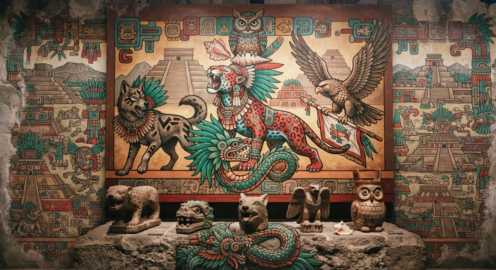

Preservación de la Memoria Cinematográfica y Audiovisual del Valle de Teotihuacán
Un archivo comunitario que rescata las cintas, los noticiarios y los cortos filmados en el valle a finales del siglo veinte, y los pone al alcance de cualquier persona, sin importar cómo mire o escuche el mundo.
De dónde partimos
La recuperación de los registros fotográficos y fílmicos de este valle documenta la época en que estas tierras apenas eran exploradas visualmente.
Lo que conservamos
Imágenes y videos de estos maravillosos lugares que documentan la maravillosa historia de la vida comunitaria.
A dónde llega
Un museo digital abierto, con subtítulos, apoyo auditivo y ajustes de color para cualquier visitante.
Ventanas al Tiempo en el Valle de Teotihuacán
Selecciona una década para examinar los cambios en el paisaje, la arqueología y la vida comunitaria.

Exploración y Primeros Registros
Las primeras misiones fotográficas y científicas documentaron la inmensidad de las pirámides antes de las grandes excavaciones urbanas.
Si viviste esa época
Vuelve a sentir el latido de las calles, las voces de nuestra gente y los recuerdos de una comunidad que construyó su historia paso a paso. Este archivo nació para que nuestras raíces jamás se borren.
Si la estás descubriendo ahora
Cambia al modo Actual y déjate guiar por este legado a través de una mirada fresca y directa, pensada para conectar con el alma de este rincón del mundo.